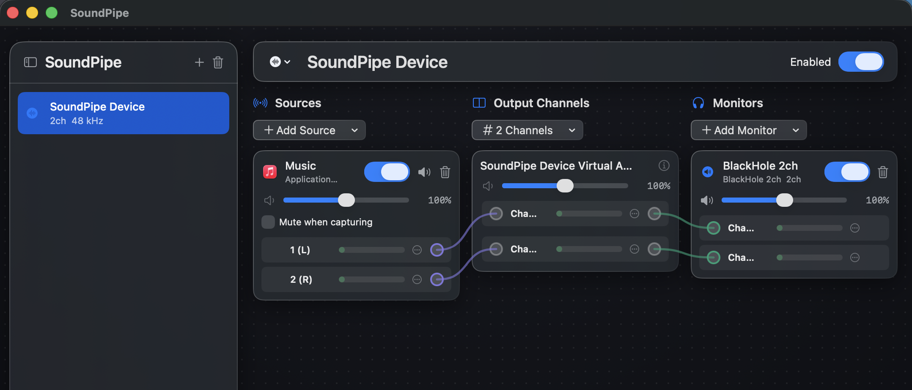

Capture Playlist
The Capture Playlist tab automates recording individual tracks from an Apple Music playlist as separate, lossless 24-bit FLAC files. DJ MetaManager controls Music playback, records each track one at a time through a virtual audio device, verifies the output, and applies metadata from the playlist — producing Rekordbox-ready files without manual intervention.
How it works
- Select a playlist from your Music library.
- DJ MetaManager snapshots the playlist order and metadata.
- For each track: the recorder is armed, Music plays the track once, audio is captured as FLAC, and the file is verified and tagged.
- Completed files appear in your output folder, ready for Rekordbox import.
The recorder is always confirmed active before Music starts playing, with a short pre-roll and post-roll to ensure no audio is clipped.
Audio routing
Capture uses BlackHole 2ch as the FFmpeg recording source. Because BlackHole operates at the macOS HAL (Hardware Abstraction Layer) level, it receives audio after DRM decryption — so it works with Apple Music streaming content where other capture APIs (ScreenCaptureKit, Core Audio Process Taps) deliver silence.
To isolate Music from other system sounds (notifications, browser audio, etc.), use SoundSource by Rogue Amoeba. Its SoundPipe virtual device routes only the Music app’s audio to BlackHole, keeping system sounds on your normal speakers or headphones.
Required software
- BlackHole 2ch — free virtual audio device for macOS.
- SoundSource by Rogue Amoeba — per-app audio routing (paid; free trial available).
SoundSource setup
Open SoundSource and create a SoundPipe Device with the following configuration:

| Setting | Value |
|---|---|
| Sources | Music (the Apple Music app) |
| Source volume | 100% |
| Mute when capturing | Unchecked — this is critical. If checked, SoundSource silences the monitor output when it detects screen/audio capture, which would cause BlackHole to receive silence. |
| Output Channels | 2 Channels |
| Output device | SoundPipe Device Virtual Audio (100%) |
| Monitors | BlackHole 2ch (100%) |
| Sample rate | 48 kHz (match your BlackHole configuration) |
Audio routing chain
Apple Music → SoundSource (Music app source)
→ SoundPipe Device (2ch virtual output)
→ BlackHole 2ch (as Monitor, 100%)
→ FFmpeg AVFoundation capture
→ FLAC 24-bit outputWith this setup, only the Music app’s audio reaches BlackHole. Other apps (browsers, system notifications) play through your normal output device and are never captured.
Monitoring while recording
If you want to hear the music while it records, add your headphones or speakers as a second monitor in SoundPipe alongside BlackHole 2ch. Both monitors receive the same audio from Music.
Capture workflow
1. Setup
- Open the Capture Playlist tab.
- Select a playlist from the dropdown (click Refresh if you recently changed playlists in Music).
- Review the track preview table — it shows the exact order and metadata that will be used.
- Set the output folder (defaults to the value in Settings, e.g.
~/Music/playlist_recordings). Use Choose folder… to browse.
2. Preflight and signal test
- Click Run preflight to verify Music is accessible, BlackHole is present, FFmpeg is available, and disk space is sufficient.
- Click Test signal with music playing in Music to confirm audio is reaching BlackHole through SoundPipe. Both channels must show signal above the silence threshold.
3. Capture
- Click Start capture. DJ MetaManager takes over Music playback.
- The running view shows the current track, progress bar, completed/failed/pending counts, and estimated time remaining.
- Each track is: armed → pre-roll → played once → post-roll → stopped → verified → tagged → completed.
- You can navigate away from the tab without stopping the capture. Return to see current progress reconstructed from server state.
4. Controls during capture
- Pause after track — finishes the current track, then pauses. Resume later.
- Stop after track — finishes the current track, then stops the session.
- Emergency stop — stops Music and the recorder immediately. The current track is marked interrupted and can be retried.
5. Review
After completion (or pause/stop), the review card shows a summary of completed, failed, and skipped tracks. Failed tracks can be retried or skipped. Use New capture to start a fresh session.
Output
Completed files are placed in the output folder as Artist - Title.flac. Each file is:
- 24-bit FLAC at the capture device’s sample rate (typically 48 kHz)
- Verified by FFprobe (codec, channels, sample rate, bit depth)
- Tagged with title, artist, album, year, genre, and track number from the playlist snapshot
- No normalisation, gain, or EQ applied — use the Normalise tab afterwards if needed
Settings
Capture settings are configured under Settings → Capture — output folder and in the capture section of config.json:
- output_dir — where completed FLAC files are placed (falls back to the destination folder if empty)
- blackhole_device_name — the BlackHole device to use (default:
BlackHole 2ch) - blackhole_channels — which channels to capture (default:
[1, 2]for BlackHole 2ch) - pre_roll_ms / post_roll_ms — silence buffer before/after playback (default: 750ms each)
- play_start_timeout_s — how long to wait for Music to start playing (default: 15s)
- playback_stall_timeout_s — stop if playback stalls for this long (default: 12s)
- duration_grace_s — allowed overrun past planned duration (default: 15s)
- disk_reserve_gb — minimum free disk space to maintain (default: 5 GB)
Troubleshooting
Silent capture (no audio in the FLAC file)
- Check that “Mute when capturing” is unchecked in SoundSource for the Music source.
- Verify BlackHole 2ch is listed as a Monitor in the SoundPipe Device at 100% volume.
- Confirm Music is the only source in SoundPipe and its volume is at 100%.
- Play a track in Music and visually confirm audio levels appear on the SoundPipe channel meters.
Truncated recording (file shorter than expected)
- Ensure SoundPipe is configured as 2 Channels, not 4. A 4-channel SoundPipe device can cause FLAC muxer issues with FFmpeg.
- Check that BlackHole 2ch (not 16ch) is the capture target when using channels 1 and 2.
Music permission denied
If DJ MetaManager cannot control Music, go to System Settings → Privacy & Security → Automation and enable the Music checkbox for Terminal (or the DJ MetaManager app if using the packaged build).
BlackHole device not found
Install BlackHole 2ch. After installation, restart the app and run preflight again. The device should appear in the FFmpeg audio device list.